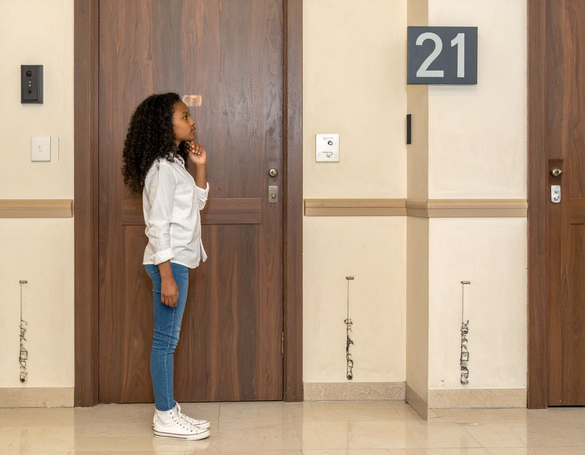

A girl wandered down the quiet hallway, her footsteps soft against the worn carpet as she scanned each door for the elusive room number she’d been given. The numbers seemed to blur together, some crooked, some faded, each one adding to her growing mix of curiosity and impatience. She paused at every doorway, leaning in, brushing her fingers over cool metal plaques, hoping the next one would finally match. The apartment building felt like a maze—narrow corners, dim lights, and the faint hum of someone’s TV behind a distant wall—but she kept moving, determined to find the space that was supposed to be hers.

A hesitant thought tugged at her as she reached the next door—his room number. She caught herself glancing at it longer than she meant to, wondering what it would feel like to book the same room, to step inside the space he once occupied, to understand why it lingered in her mind like an unfinished sentence. Maybe it was silly. Maybe it was curiosity. Or maybe it was the way the concierge had paused earlier when she’d mentioned him, as if there was more to say but not enough permission to say it. She considered turning back, asking the concierge directly—Who was he? Why that room?—but the question felt too heavy for her tongue. Still, the idea stayed with her, following her down the hallway like a shadow she wasn’t sure she wanted to shake.
| Book same room | Question concierge |